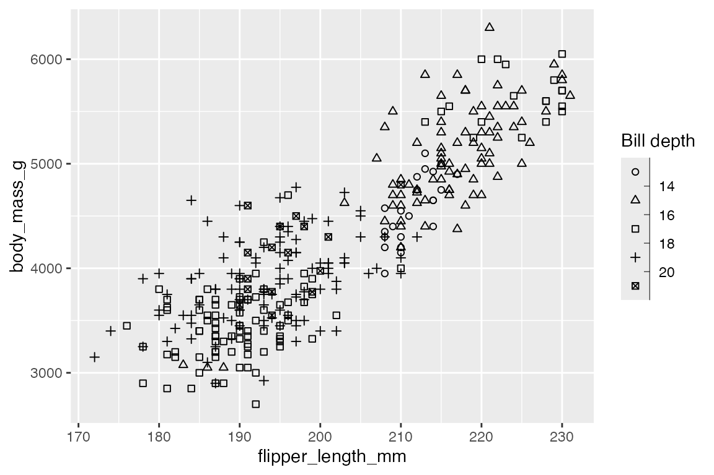

library(ggplot2)
library(dplyr)
library(readr)
library(palmerpenguins)
# Data
penguins <- penguins |>
filter(!is.na(flipper_length_mm),
!is.na(sex))
bikes <- read_csv(
here::here("data", "london-bikes-custom.csv"),
col_types = "Dcfffilllddddc"
)
bikes$season <- forcats::fct_inorder(bikes$season)
p <- penguins |>
ggplot(aes(x = flipper_length_mm,
y = body_mass_g)) +
geom_point(aes(color = species)) +
theme(legend.position = "none")19 Aesthetic scales
In addition to position and color, ggplot2 contains a number of scales that affect the aesthetic qualities of geoms. These include size (Section 19.3), transparency (Section 19.4), shape (Section 19.5), line width (Section 19.6.1), and line type (Section 19.6.2).
19.1 Resources
- Scales documentation
- ggplot2 Cheatsheet: Scales
- scales package
- Wickham, ggplot2 Book: Other aesthetics
- R for Data Science: Communication, Scales
19.2 Types of scales
There are five main types of aesthetic scales:
- Continuous: Map continuous values to visual ones -
scale_*_continuous() - Discrete: Map a finite number of discrete categories to visual ones -
scale_*_discrete() - Binned: Map continuous values into discrete bins or categories -
scale_*_binned() - Manual: Map discrete values to manually chosen visual ones -
scale_*_manual(values = c())(Section 19.7) - Identity: Use data values directly as visual ones -
scale_*_identity()(Section 19.8)
19.3 Scale size
The main reason to change the default scale for size is to affect the upper and lower bounds of the size of the geoms. This is done with the range argument. The defaults for size are range = c(1, 6).
Size base plot
Code
psize <- penguins |>
ggplot(aes(x = flipper_length_mm,
y = body_mass_g,
size = bill_depth_mm)) +
geom_point(alpha = 0.4)psize +
scale_size(range = c(0.5, 4))You can also change the guides with scale_size(), providing a title for the legend, the breaks for the legend, and the labels for the legend. These types of changes to breaks and labels are also available with other scales.
psize +
scale_size("Bill depth",
range = c(0.5, 4),
breaks = c(15, 17, 19, 21),
labels = c("Fifteen", "Seventeen",
"Nineteen", "Twenty-one")
)The number of breaks in the size legend can be changed with scales::extended_breaks(n), which provides access to an n.breaks argument in a continuous scale.
psize +
scale_size("Bill depth",
range = c(0.5, 4),
breaks = scales::extended_breaks(8)
)A similar effect can be achieved with scale_size_binned(), which has an argument for n.breaks. Like binned position and color scales, scale_size_binned() makes a continuous variable into a discrete variable. Using a binned scale changes the legend style to guide_bins(), and it directly affects the scale used in the plot. This can be seen by choosing a smaller number of bins. To keep a continuous scale for the plot but use a binned legend use guide_bins(), see Section 21.8.1.
psize +
scale_size_binned("Bill depth",
range = c(0.5, 4),
n.breaks = 4)19.4 Scale transparency
Scaling transparency is very similar to scaling size. The default alpha range is range = c(0.1, 1).
Alpha base plot
Code
palpha <- penguins |>
ggplot(aes(x = flipper_length_mm,
y = body_mass_g,
alpha = bill_depth_mm)) +
geom_point()Compare scale_alpha() and scale_alpha_binned()
palpha +
scale_alpha("Bill depth",
range = c(0.2, 0.5)
)
palpha +
scale_alpha_binned("Bill depth",
range = c(0.2, 0.5),
n.breaks = 6)It is also possible to map alpha to discrete values.
penguins |>
ggplot(aes(x = flipper_length_mm,
y = body_mass_g,
alpha = species)) +
geom_point() +
scale_alpha_discrete("Species")
#> Warning: Using alpha for a discrete variable is not advised.19.5 Scale shape
Mapping values to shapes can be useful when you have a small number of discrete values. The only different argument for scale_shape() is whether shapes should be solid or not, default is solid = TRUE.
penguins |>
ggplot(aes(x = flipper_length_mm,
y = body_mass_g,
shape = species)) +
geom_point() +
scale_shape("Species",
solid = FALSE)Though it is probably not useful too often, it is also possible to map a continuous variable to shapes using scale_shape_binned().
penguins |>
ggplot(aes(x = flipper_length_mm,
y = body_mass_g,
shape = bill_depth_mm)) +
geom_point() +
scale_shape_binned("Bill depth",
solid = FALSE)
There are 25 different shapes that are associated with each integer. Use scale_shape_manual() to choose the shapes.
19.6 Scale lines
There are two scales that can be applied to lines: linewidth and linetype. These are analogous to scaling size and shape.
19.6.1 Line width
Line width used to be controlled with size, but now linewidth is preferred. Like size, you can scale line width with scale_linewidth() or scale_linewidth_binned().
# Base plot
plw <- bikes |>
summarise(count = sum(count), .by = c(month, day_night)) |>
ggplot(aes(x = month, y = count, group = day_night,
linewidth = count)) +
geom_line(lineend = "round") +
scale_y_continuous(guide = "none")
# linewidth
plw +
scale_linewidth("Count",
range = c(0.1, 4))
# linewidth_binned
plw +
scale_linewidth_binned("Count",
range = c(0.1, 4),
n.breaks = 10,
labels = scales::label_comma())19.6.2 Line type
linetype is like shape in that there is little to do with the scale other than choose among the thirteen line types with scale_linetype_manual(). You can access the default linetype palette with scales::linetype_pal().
19.7 Manual scales
Manual scales are created within the scale_*_manual() function through the values argument. values accepts a vector or a named vector to match to the values. See the Aesthetic specifications vignette for valid aesthetic values for the different geom scales.
penguins |>
ggplot(aes(x = flipper_length_mm,
y = body_mass_g,
shape = species)) +
geom_point() +
scale_shape_manual("Species",
values = c(8, 9, 13))A named vector makes the mapping clearer:
penguins |>
ggplot(aes(x = flipper_length_mm,
y = body_mass_g,
size = species)) +
geom_point(alpha = 0.4) +
scale_size_manual("Species",
values = c("Adelie" = 0.5, "Chinstrap" = 3, "Gentoo" = 5)
)19.8 Identity scales
Identity scales are similar to manual scales, but are used when the data is already scaled. For instance, you might add a scale within the data wrangling process. By default no guide/legend is produced.
penguins |>
mutate(bill_depth_cm = bill_depth_mm / 10) |>
ggplot(aes(x = flipper_length_mm,
y = body_mass_g,
size = bill_depth_cm)) +
geom_point(alpha = 0.4) +
scale_size_identity("Bill depth\n(cm)",
guide = "legend")